Analizar datos es solo una parte del trabajo: también hay que comunicar los resultados. Si el análisis se hace en un programa y el informe en otro, cada cambio en los datos obliga a copiar y pegar de nuevo tablas y gráficos, y es fácil cometer errores.
RMarkdown resuelve este problema: un solo archivo
.Rmd reúne el texto, el código y sus resultados. Al generar
el documento, el código se ejecuta de nuevo y los resultados se
actualizan. Esto hace que el análisis sea reproducible:
otra persona, o uno mismo tiempo después, puede repetirlo y obtener lo
mismo.
Según R Markdown: The Definitive Guide, para empezar se requiere:
rmarkdown, que convierte un archivo
.Rmd en un documento final. R lo necesita
para generar cualquier documento.tinytex, que instala TinyTeX, una versión liviana
de LaTeX.install.packages("rmarkdown")
# Solo para generar PDF
install.packages("tinytex")
tinytex::install_tinytex()Según la documentación del paquete rmarkdown, un
documento se genera en dos etapas. Primero, el paquete
knitr ejecuta el código y escribe sus resultados en el
texto. Luego, Pandoc convierte ese texto al formato elegido.
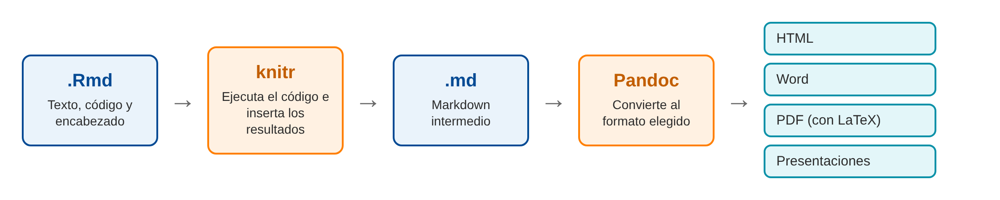
Proceso para generar un documento desde un archivo .Rmd
En RStudio, ingresar a File > New File > R Markdown…
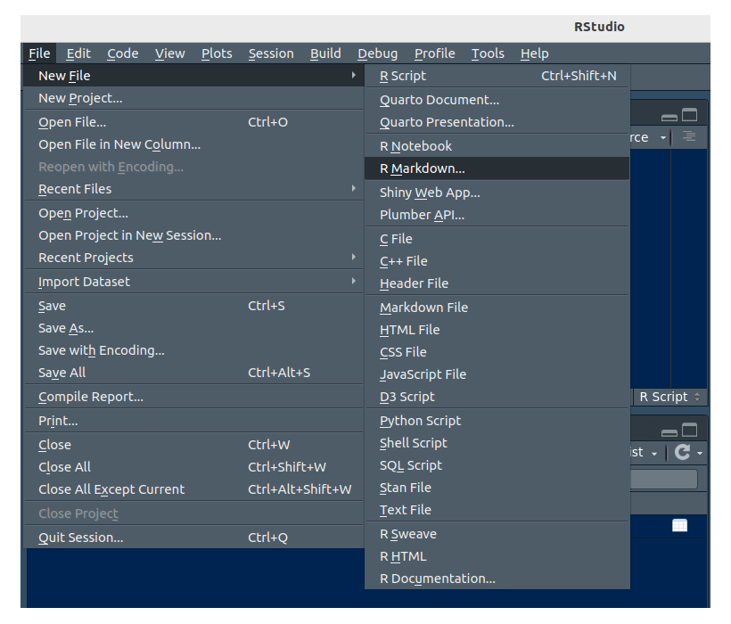
Menú para crear un archivo R Markdown
En la ventana que aparece se escribe el título y el autor, y se elige el formato. Se recomienda empezar con HTML. El formato se puede cambiar después sin rehacer el documento.
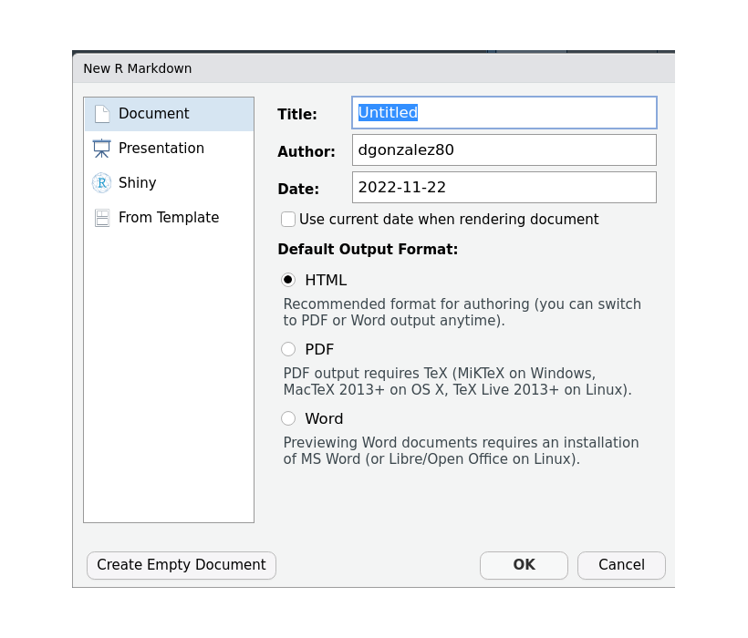
Ventana New R Markdown
Al hacer clic en OK, RStudio abre una plantilla de
ejemplo. Conviene guardarla de inmediato con extensión
.Rmd, dentro del proyecto de RStudio.
Un archivo .Rmd tiene tres partes:
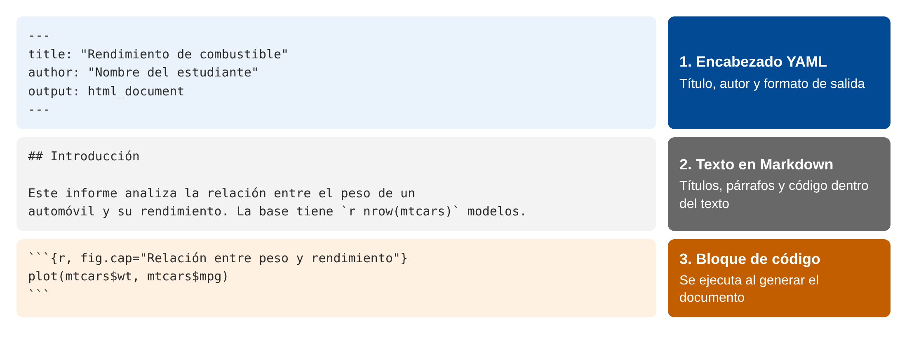
Partes de un archivo .Rmd
Un bloque de código se inserta con el botón verde C o con Ctrl + Alt + I (Cmd + Option + I en macOS). Cada bloque se puede probar con el triángulo verde que aparece a su derecha.
Para generar el documento se usa el botón Knit o Ctrl + Shift + K (Cmd + Shift + K en macOS).
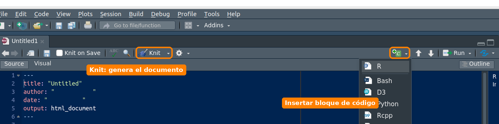
Botones para insertar código y generar el documento
RStudio muestra el documento y guarda el archivo de
salida en la misma carpeta del .Rmd. Este es el resultado
del ejemplo de esta página:
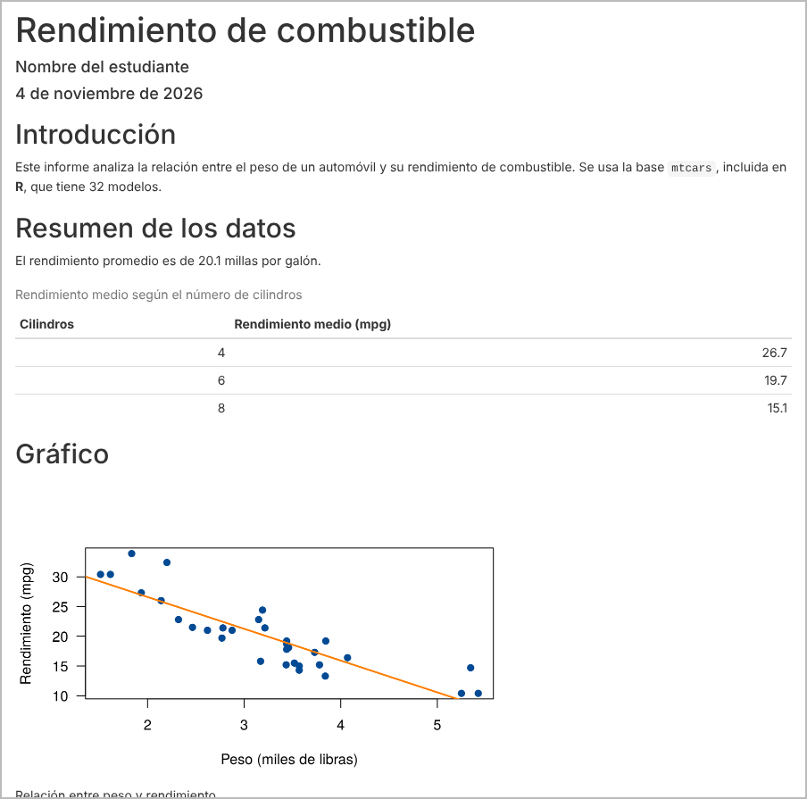
Documento HTML generado
Descargar ejemplo_rmarkdown.Rmd. Ábralo en RStudio y haga clic en Knit.
Este es su contenido:
---
title: "Rendimiento de combustible"
author: "Nombre del estudiante"
date: "4 de noviembre de 2026"
output: html_document
---
```{r setup, include=FALSE}
knitr::opts_chunk$set(echo = FALSE, message = FALSE, warning = FALSE)
```
## Introducción
Este informe analiza la relación entre el peso de un automóvil y su rendimiento de combustible. Se usa la base `mtcars`, incluida en **R**, que tiene `r nrow(mtcars)` modelos.
## Resumen de los datos
El rendimiento promedio es de `r round(mean(mtcars$mpg), 1)` millas por galón.
```{r}
resumen <- aggregate(mpg ~ cyl, data = mtcars, FUN = mean)
names(resumen) <- c("Cilindros", "Rendimiento medio (mpg)")
knitr::kable(resumen, digits = 1, caption = "Rendimiento medio según el número de cilindros")
```
## Gráfico
```{r, fig.cap="Relación entre peso y rendimiento", fig.width=5.5, fig.height=3}
plot(mtcars$wt, mtcars$mpg, pch = 19, col = "#034A94", las = 1,
xlab = "Peso (miles de libras)", ylab = "Rendimiento (mpg)")
abline(lm(mpg ~ wt, data = mtcars), col = "#FF7F00", lwd = 2)
```
## Conclusión
Los automóviles más pesados tienden a recorrer menos millas por galón.Markdown es una forma simple de dar formato usando texto plano.
| Se escribe | Se obtiene |
|---|---|
# Título 1 |
título de primer nivel |
## Título 2 |
título de segundo nivel |
**negrita** |
negrita |
*cursiva* |
cursiva |
`codigo` |
codigo |
- elemento |
lista con viñetas |
1. elemento |
lista numerada |
[Posit](https://posit.co) |
Posit |
 |
imagen |
$\bar{x}$ |
\(\bar{x}\) |
$$s^2 = \frac{1}{n-1}\sum_{i=1}^{n}(x_i-\bar{x})^2$$ |
ecuación centrada |
Una tabla se puede escribir directamente:
| Grupo | Promedio |
|:------|---------:|
| A | 3.8 |
| B | 4.1 |Un bloque empieza con ```{r} y termina con
```. Se le puede dar un nombre y agregar opciones que
controlan qué aparece en el documento:
| Opción | Qué hace |
|---|---|
echo = FALSE |
oculta el código y muestra el resultado |
eval = FALSE |
muestra el código sin ejecutarlo |
include = FALSE |
ejecuta el código sin mostrar nada |
message = FALSE |
oculta los mensajes |
warning = FALSE |
oculta las advertencias |
fig.cap = "Título" |
agrega un título a la figura |
fig.width, fig.height |
define el tamaño de la figura, en pulgadas |
cache = TRUE |
guarda el resultado para no recalcularlo |
Las opciones que se repiten se definen una sola vez en el primer bloque:
knitr::opts_chunk$set(echo = FALSE, message = FALSE, warning = FALSE)Un resultado también se puede insertar en una oración. Así, al escribir
La base tiene `r nrow(mtcars)` modelos.
se obtiene: La base tiene 32 modelos. De esta forma las cifras del texto se actualizan solas si cambian los datos.
La función kable(), del paquete knitr,
convierte un data frame en una tabla con formato. El paquete
knitr se instala junto con rmarkdown. Se
escribe knitr::kable() para usar la función sin cargar todo
el paquete con library():
knitr::kable(head(iris, 3), caption = "Primeros registros de la base iris")| Sepal.Length | Sepal.Width | Petal.Length | Petal.Width | Species |
|---|---|---|---|---|
| 5.1 | 3.5 | 1.4 | 0.2 | setosa |
| 4.9 | 3.0 | 1.4 | 0.2 | setosa |
| 4.7 | 3.2 | 1.3 | 0.2 | setosa |
El formato se define en el campo output del encabezado.
El paquete rmarkdown incluye los siguientes:
| Tipo | Valor de output |
Genera | Requiere |
|---|---|---|---|
| Documento | html_document |
página web | |
pdf_document |
LaTeX | ||
word_document |
Word (.docx) | Word o LibreOffice para abrirlo | |
odt_document |
OpenDocument (.odt) | ||
rtf_document |
texto enriquecido (.rtf) | ||
md_document |
Markdown | ||
github_document |
Markdown para GitHub | ||
| Cuaderno | html_notebook |
cuaderno interactivo | |
| Presentación | ioslides_presentation |
diapositivas HTML | |
slidy_presentation |
diapositivas HTML | ||
beamer_presentation |
diapositivas PDF | LaTeX | |
powerpoint_presentation |
PowerPoint (.pptx) | PowerPoint o LibreOffice para abrirlo |
Estas imágenes salieron del mismo archivo
ejemplo_rmarkdown.Rmd. Solo cambió el valor de
output.
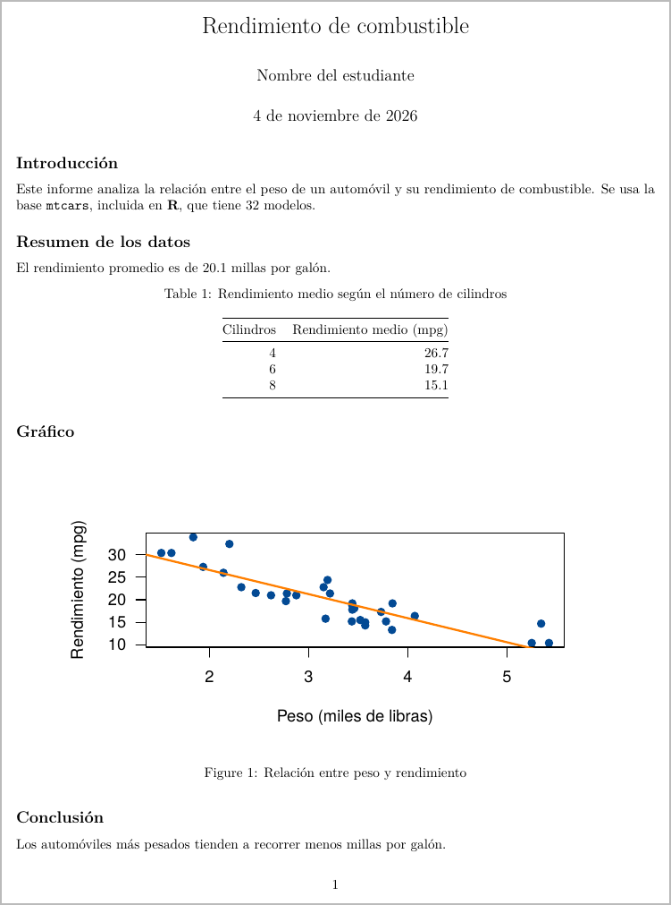
pdf_document
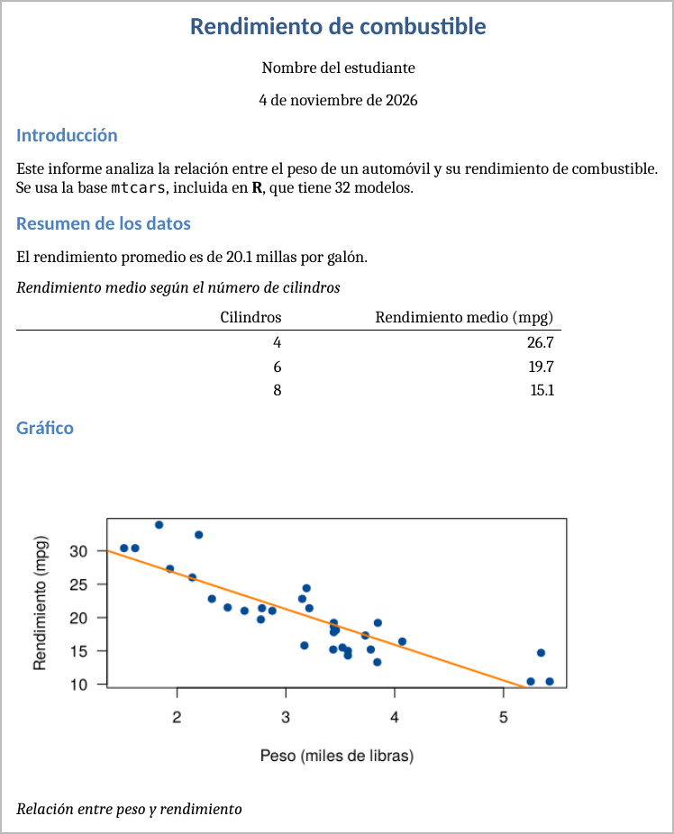
word_document
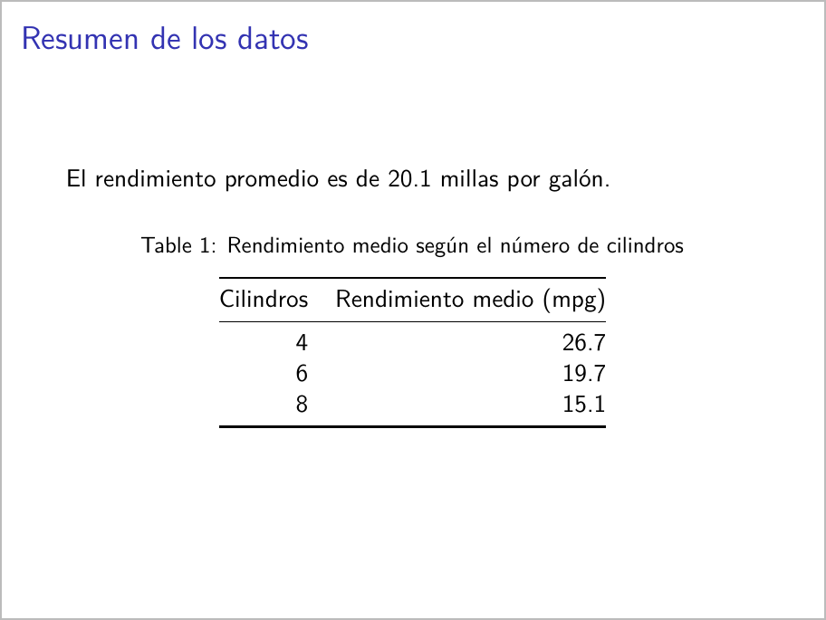
beamer_presentation
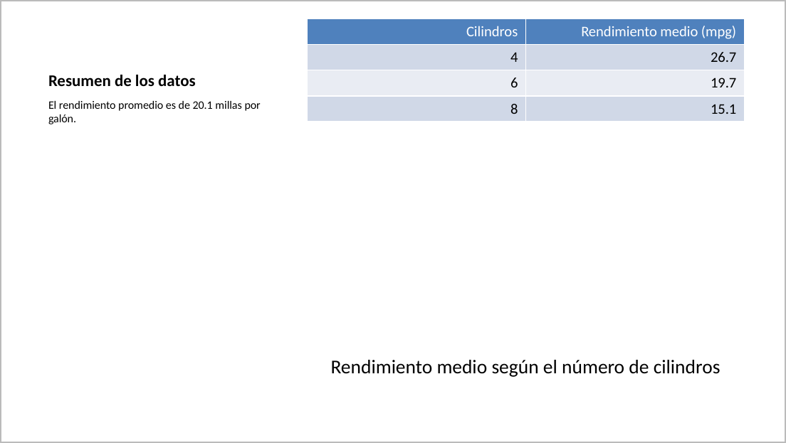
powerpoint_presentation
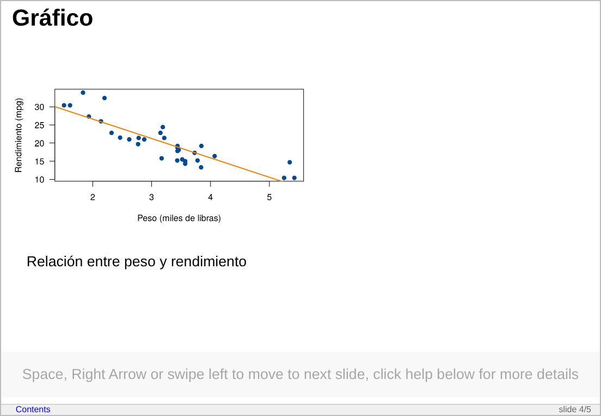
slidy_presentation
En las presentaciones, cada título ## inicia una
diapositiva.
Cada formato admite opciones. Por ejemplo, este encabezado agrega una tabla de contenido, numera las secciones y permite ocultar el código:
---
title: "Mi informe"
author: "Nombre"
output:
html_document:
toc: true
toc_float: true
number_sections: true
code_folding: hide
---Con otros paquetes se pueden crear más tipos de documento.
Cada uno se instala con install.packages() y agrega sus
plantillas a File > New File > R Markdown > From
Template.
| Paquete | Para qué sirve | Ejemplo de uso |
|---|---|---|
flexdashboard |
Organiza gráficos e indicadores en un tablero | Seguimiento mensual de ventas |
bookdown |
Escribe documentos largos con capítulos y referencias cruzadas | Libro, tesis o manual |
blogdown |
Crea sitios web y blogs | Página personal con publicaciones |
rticles |
Ofrece plantillas con el formato de revistas científicas | Artículo para enviar a una revista |
xaringan |
Crea presentaciones HTML con más opciones de diseño | Clase o sustentación |
revealjs |
Crea presentaciones HTML con transiciones | Charla o conferencia |
learnr |
Convierte un documento en un tutorial con ejercicios | Material de práctica para estudiantes |
shiny |
Agrega controles que el lector puede cambiar | Aplicación para explorar datos |
tufte |
Da formato de documento con notas al margen | Informe con comentarios laterales |
Este sitio no necesita un paquete adicional: se construye con
rmarkdown::render_site(), que convierte varios
.Rmd en un sitio web.
Un mismo informe se puede repetir para distintos casos. Los
parámetros se definen en el encabezado y se usan en el código como
params$ciudad:
---
title: "Informe por ciudad"
output: html_document
params:
ciudad: "Cali"
---rmarkdown::render("informe.Rmd", params = list(ciudad = "Pasto"))Quarto es el sistema de publicación
más reciente, creado también por Posit. Funciona con R, Python y Julia,
y usa archivos .qmd con una sintaxis muy parecida. Se elige
desde File > New File > Quarto Document… y el
formato se indica con format: html.
RMarkdown sigue con mantenimiento y soporte, de modo que no es obligatorio migrar. Lo aprendido en esta página sirve para ambos.
| Problema | Causa | Solución |
|---|---|---|
Funciona en la consola, pero Knit falla con
object not found |
Knit trabaja en una sesión nueva y no ve los objetos del ambiente | Crear o cargar los objetos dentro del
.Rmd |
could not find function |
Falta cargar un paquete | Agregar library() en un bloque |
cannot open file |
La ruta no es relativa a la carpeta del
.Rmd |
Usar proyectos y rutas relativas |
| El PDF no se genera | No hay LaTeX instalado | Instalar TinyTeX |
duplicate label |
Dos bloques tienen el mismo nombre | Cambiar uno de los nombres |
Error con install.packages() |
Se dejó esa instrucción en un bloque | Instalar en la consola, una sola vez |
| El documento se corta o se ve mal | Falta cerrar un bloque con ``` |
Revisar el cierre de cada bloque |
Descargue ejemplo_rmarkdown.Rmd, ábralo en
RStudio y genere el documento. Después obtenga una
versión en Word sin cambiar el contenido.
En el encabezado, cambie output: html_document por
output: word_document y haga clic en Knit.
El archivo .docx queda en la misma carpeta del
.Rmd.
Cree un documento HTML con la base iris que incluya
título, autor, una tabla con la media de Sepal.Length por
especie, un gráfico y una oración cuya cifra se calcule con código
dentro del texto.
Esta es una solución posible:
---
title: "Longitud del sépalo por especie"
author: "Nombre del estudiante"
output: html_document
---
```{r setup, include=FALSE}
knitr::opts_chunk$set(echo = FALSE, message = FALSE, warning = FALSE)
```
## Resumen
La base `iris` tiene `r nrow(iris)` flores y la longitud media del sépalo es de `r round(mean(iris$Sepal.Length), 2)` cm.
```{r}
medias <- aggregate(Sepal.Length ~ Species, data = iris, FUN = mean)
names(medias) <- c("Especie", "Longitud media (cm)")
knitr::kable(medias, digits = 2, caption = "Longitud media del sépalo por especie")
```
## Gráfico
```{r, fig.cap="Longitud del sépalo por especie"}
boxplot(Sepal.Length ~ Species, data = iris, las = 1,
xlab = "Especie", ylab = "Longitud del sépalo (cm)")
```Modifique el informe del reto anterior para que tenga tabla de
contenido y no muestre el código ni los mensajes. Luego elimine las
filas de la especie setosa y compruebe que las cifras del
texto se actualizan solas.
La tabla de contenido se activa en el encabezado:
output:
html_document:
toc: trueEl código y los mensajes se ocultan en el primer bloque. Allí mismo
se pueden cambiar los datos, y los demás bloques deben usar
datos en lugar de iris:
knitr::opts_chunk$set(echo = FALSE, message = FALSE, warning = FALSE)
datos <- subset(iris, Species != "setosa")Al generar de nuevo el documento, la oración indica 100 flores en lugar de 150.
Una persona ejecuta datos <- iris en la consola. Su
archivo .Rmd solo tiene un bloque con
summary(datos). Al hacer clic en Knit
aparece el error object 'datos' not found. ¿Qué pasó y cómo
se corrige?
Knit trabaja en una sesión nueva y no ve los objetos
creados en la consola. Se debe crear el objeto dentro del
.Rmd, antes de usarlo:
datos <- iris
summary(datos)Estos videos en español complementan la página. Algunos son de hace varios años, así que la apariencia de RStudio puede variar.
| Video | Canal | Año | Tema |
|---|---|---|---|
| Aprende lo Básico de R Markdown en 20 Minutos | José Antonio: Estadística Aplicada | 2021 | Introducción |
| Videotutorial 3. RMarkdown para principiantes | Máxima Formación | 2018 | Documentos reproducibles |
| Aspectos básicos de R Markdown | DaniMedi | 2020 | Crear el archivo y sintaxis básica |
| Incluyendo código en R Markdown (chunks) | DaniMedi | 2020 | Bloques de código y opciones |
| Generar documento PDF en RMarkdown | Renzo Caceres Rossi | 2022 | PDF e índice |
| R markdown en Rstudio: documentos y presentaciones | YenLab | 2022 | Clase completa, incluye xaringan |
En inglés: Quarto for the curious, de Tom Mock (Posit, 2022), compara RMarkdown y Quarto.
rmarkdown. Documentación del
paquete y de la función render().Última revisión: 4 de noviembre de 2026.